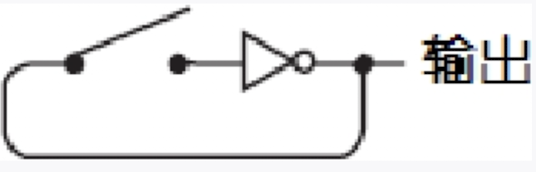

非常重要的一章内容，相对之前章节也要更难一些。可以参考b站视频辅助学习
2-1选择器
2-1选择器使用了8个如下所示的电路。
如果选择端(Select)输入是1，那么或门的输出和B端的输入就是一致的。这是因为上面与门的输出和B端输入是一样的，而下面与门的输出是0。类似的，如果选择端的输入是0，那么或门的输出则和A端输入一致。总结起来如下表所示。
反馈与触发器（feedback & Flip-Flop）
振荡器（oscillator）
我们可以下图这个继电器来实现一个蜂鸣器。当继电器开关闭合后，金属簧片就会上下跳动——电路也会随之连通或断开——声音也就会随之发出。
闭合开关导致，导致电磁铁产生磁性，将金属簧片拉下来。当金属簧片断开时，电路也就不联通了。此时，因为物理结构，金属簧片又会弹回原位，导致电路再次连通。即我们就形成了一个蜂鸣器（需要你在簧片上绑一个小锤子，旁边再放一个锣）
此电路可以简化为一个反向器。

当反向器输入0时，他就输出1；当输入1时，输出就为0。电路中的开关一旦闭合，反向器中的继电器就会在连通与断开这两种状态之间反复交替。你也可以将电路中的开关省去，这样就可以使反向器连续地工作，如下所示。
电路的输出是什么呢？其实就是要么提供电压，要么不提供电压，在两者之间切换。我们也可以换种方式来表达——输出结果要么是0，要么是1。
我们把这种电路称为振荡器(oscillator)，振荡器却在不需要人干涉的情况下，可以完全自发地工作。振荡器有着举足轻重的作用。为了使不同组件同步工作，所有计算机都配备着某种振荡器。
这幅图表示随着时间的推移，振荡器的输出在0和1之间按照固有的规律交替变化。正因为这一点，振荡器又经常被称为时钟(clock)，通过振荡进行计数也是一种计时方式。
周期的倒数就是振荡器的频率(frequency)。在这个例子中振荡器的周期是0.05s，那么其频率就是1÷0.05s，即振荡器每秒钟产生20次循环，而相应的输出每秒钟也变化20次。因此振荡器的频率就是20赫兹，记做20 Hz
反馈与触发器（feedback & Flip-Flop）
让我们来回顾一下或非门的逻辑。只有在两端输入都没有电压时输出才有电压
| NOR | 0 | 1 |
|---|---|---|
| 0 | 1 | 0 |
| 1 | 0 | 0 |
下面是一个包含两个或非门、两个开关和一个灯泡的电路。
值得注意的是这种特殊的弯曲的连线方式：左边或非门的输出是右边或非门的输入，而右边或非门的输出是左边或非门的输入。这种连接方式我们称之为反馈(feedback)。系统的输出返回给输入这种形式和我们在振荡器中讨论的情况很相似
初始情况下，两个输入都是0。当我们闭合上面的开关时，左边的或非门立刻输出0，右边的或非门输出也会变为1，这时灯泡被点亮。

但是当我们在打开上面的开关时，灯泡依然点亮。并且，无论我们怎么调整上面的开关灯泡依然点亮，究其原因可以发现这是由于左边或非门的输出一直为0。
当我们闭合下面的开关时，右边或非门的输入中有一个立刻变为1，其输出就相应地变为0，灯泡随之熄灭。左边或非门的输出此刻变为1。这时你再去断开下面的开关就会发现，灯泡一直处在熄灭状态。
在两个开关都断开的状态下，灯泡有时亮着，有时却不亮。两个开关都断开时，电路有两个稳定态，这类电路统称为触发器(Flip-Flop)
触发器电路可以保持信息，它可以“记住”某些信息。特别地，对于本章先前所讲述的触发器，它可以记住最近一次是哪个开关先闭合。如果你遇到这样一种触发器，如果它的灯泡是亮着的，你就可以推测出最后一次连通的是上面的开关；而如果灯泡不亮则可推测出最后一次连通的是下面的开关。
它们可以让电路“记住”之前发生了什么事情。一个能计数的电路（本章后面要讲到）必定需要触发器。
R-S(Reset-Set，复位/置位)触发器
我们通常把两个非或门绘制成另一种形式，加上标识符就得到了下面这幅图。
我们通常用Q来表示用于点亮灯泡的输出的状态。另一个输出 $\overline{Q}$（读做Q反）是对 Q 的取反。Q是0，$$\overline{Q}$$ 就是1，反之亦然。输入端S(Set)用来置位，R(Reset)用来复位。你可以把“置位”理解为把Q设为1，而“复位”是把Q设为0。当状态S为1时（对应于先前触发器中上面的开关闭合的情况），此时Q变为1而 $$\overline{Q}$$ 变为0；当R状态为1时（对应于前面图中闭合下面的开关的情况），此时Q变为0而 $$\overline{Q}$$ 变为1。当S和R均为0时，输出保持Q原来的状态不变。我们把结论总结如下表所示。
| 输入 | 输出 | ||
|---|---|---|---|
| S | R | Q | $$\overline{Q}$$ |
| 1 | 0 | 1 | 0 |
| 0 | 1 | 0 | 1 |
| 0 | 0 | Q | $$\overline{Q}$$ |
| 1 | 1 | 禁止 | 禁止 |
如果S、R状态同时为1时，Q和 $$\overline{Q}$$ 均会为零，这与Q和 $$\overline{Q}$$ 互反的假设关系相矛盾。所以当使用R-S触发器进行电路设计时，R、S输入同时为1的情况一定要避免。
R-S触发器可以简化为带有输入和输出标志的小框图，就像下面画的这样
R-S触发器最突出的特点在于，它可以记住哪个输入端的最终状态为1。但是有时候我们需要一种记忆能力更加强大的电路，例如能记住在某个特定时间点上的一个信号是0还是1。
D型触发器
在构造具备这种功能的电路之前，让我们先来思考一下它的具体行为。这个电路存在两个输入。其中一个我们称之为数据端(Data)。与所有数字信号一样，数据端取值为0或1；另一个输入被称为保持位(Hold That Bit)，保持位的作用就是使当前的状态被“记住”，通常情况下保持位被设置为0，在这种情况下数据端对电路不产生影响。当保持位置1时，数据端的值就会在电路系统中被“记住”。随后保持位又置为0，这时电路已经“记住”了数据端的最后一次输入，而之后数据端的输入无论如何变化都不会对电路产生影响。
我们可以把状态转化的过程以真值表的形式表示如下。
| 输入 | 输出 | |
|---|---|---|
| 数据 | 保持位 | Q |
| 0 | 1 | 0 |
| 1 | 1 | 1 |
| X | 0 | Q |
X表示“其取值情况与结果无关”，只要保持位的值为0，那么数据位对电路的输出没有影响，电路的输出和其前一个状态相同
我们的电路需要在输入端增加两个与门，下图所给出了该系统的实现电路。
当保持位信号为1时，这套电路系统就和先前讲过的R-S触发器功能一致。
但我们需要改造一下这个触发器，我们只想要两个输入，而非三个输入。真正有意义的输入可以是S为0, R为1或者是R为0, S为1的情形。如果把数据端信号看做置位信号，把它取反后的值看做复位端信号，我们可以画出相应的电路图如下所示。
这个电路称为电平触发的D型触发器，D(Data)表示数据端输入。所谓电平触发是指当保持位输入为某一特定电平（本例中为“1”）时，触发器才保存数据端的输入值（很快，我们将看到另一种形式的触发器）
电平触发的D型锁存器
通常情况下，输入端不会被标记为保持为，而是被标记为时钟（clock）。现在这个时钟仅仅用来指示什么时候保存数据。
通常把数据端简写为D，时钟端简写为Clk，其功能表如下所示。
这个电路也就是所谓的电平触发的D型锁存器，它表示电路锁存住一位数据并保持它，以便将来使用。这个电路也可以被称为1位存储器。
我们在一个小盒子里布置8个锁存器，如前所述，每个锁存器包括两个或非门、两个与门以及一个反相器。所有的时钟输入端都互相连在一起。结果如下图所示。
这个锁存器可以一次保存8位数。上面的8个输入端依次标记为D0～D7，下面的8个输出端被标记为Q0～Q7。左边的输入是时钟(Clk)，时钟信号通常为0。当时钟信号为1时，D端输入的8位值被送到Q端输出。当时钟信号为0时，这8位值将保持不变，直到时钟信号再次被置1。
也可以将8位锁存器的8个数据输入端和8个Q输出端画为两组线，如下图所示

我们可以改进我们的加法器（暂不考虑减法），8位加法器的8个S输出端既与灯泡相连，又连接到8位锁存器的数据(D)输入端。标记为“保存”(Save)的开关是锁存器的时钟输入，用来存放加法器的运算结果。
改进后的加法器包含了8个2-1选择器。但是加法器不能很好地处理进位输出(CO)信号。如果两个数的相加使得进位输出信号为1，那么当下个数被加进来的时候，这个信号将被忽略掉。一个可能的解决方案是将加法器、锁存器、选择器均设置为16位宽，或者至少应该比你可能遇到的最大的和的位数多一位。这个问题留到第17章具体讲述。
对于加法器而言，我们有一个更好的改进方法，就是去掉一整排的8个开关。但是我们需要先对D触发器做一些修改，为它加一个或门和一个称为清零(Clear)的输入信号。清零信号通常为0，但当它为1时，Q输出为0，如下图所示。
无论其他信号是什么，清零信号总是强制使Q输出为0，以达到使触发器清零的目的。
注意，标识为“相加”(Add)的开关现在控制着锁存器的时钟输入。
你可能会发现这个加法器比前面的那个好用，特别是当你需要加上一长串数字时。首先按下清零开关，这个操作会使锁存器的输出为0，并且熄灭了所有的灯泡，同时使8位加法器的第2行输入全为0。然后，通过开关输入第一个加数，并且闭合“相加”开关，这个加数的值就反映在灯泡上。再输入第二个加数并再次闭合“相加”开关。由开关输入的8位操作数加到前面的结果上，所得的和体现到灯泡上。反复如此操作，可以连续进行很多次加运算。